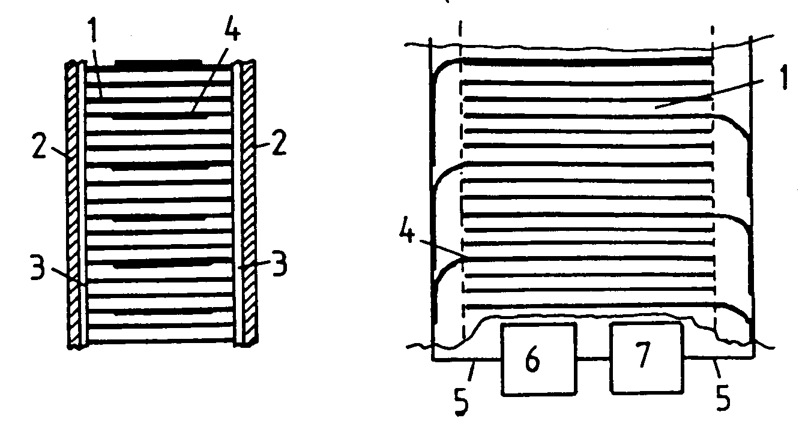
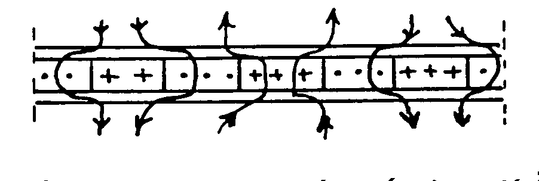

The following is a U.K. Patent granted to Harold Aspden on April 16, 1997 with a first publication date of May 3 1995.
Abstract: The thermoelectric device disclosed in U.K. Patent 2,227,881 is developed by this invention to accentuate the Nernst Effect contribution. By using thin ferromagnetic metal laminations 1 of thickness commensurate with or smaller than the normal magnetic domain size (100 micron) and feeding current transversely through the laminations with heat flow in the laminar planes, the current, regardless of polarity, selects a passage through the lamination which traverses a magnetic domain polarization having a direction in which the Nernst EMF assists the current. This results in a conversion of heat into electricity. A superconducting polymer, oxidized polypropylene, may be used as a heat resistant filler between the laminations to provide the continuity for transverse current flow. Heat sinks 2 are insulated by coatings 3 and connections are made by conductors 4.

